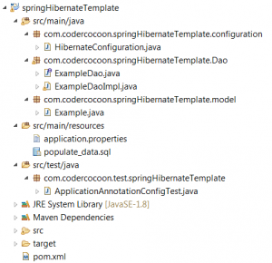

This example presents the basic concept of using in Spring HibernateTemplate and HibernateCallback.
The technologies used are :
- Spring 4.3.4
- Hibernate 4.3.6
- Junit 4.12
- JDK 1.8
- Maven 3.3.9
You can convert this example to an eclipse project by going to folder where is the pom.xml is, and use the following command :
mvn eclipse:eclipse
Here the project files :

Example Spring 4 – HibernateTemplate and HibernateCallback
package com.codercocoon.springHibernateTemplate.configuration;
import java.util.Properties;
import javax.sql.DataSource;
import org.hibernate.SessionFactory;
import org.springframework.beans.factory.annotation.Autowired;
import org.springframework.context.annotation.Bean;
import org.springframework.context.annotation.ComponentScan;
import org.springframework.context.annotation.Configuration;
import org.springframework.context.annotation.PropertySource;
import org.springframework.core.env.Environment;
import org.springframework.jdbc.datasource.DriverManagerDataSource;
import org.springframework.orm.hibernate4.HibernateTransactionManager;
import org.springframework.orm.hibernate4.LocalSessionFactoryBean;
import org.springframework.transaction.annotation.EnableTransactionManagement;
/**
* The configuration class.
*
* @author contact@codercocoon.com
*
*/
@Configuration
@ComponentScan({ "com.codercocoon.springHibernateTemplate" })
@PropertySource({ "classpath:application.properties" })
@EnableTransactionManagement
public class HibernateConfiguration {
@Autowired
protected Environment environment;
/**
* This method gets the sessionFactory bean.
*
* @return LocalSessionFactoryBean.
*/
@Bean
public LocalSessionFactoryBean sessionFactory() {
LocalSessionFactoryBean sessionFactory = new LocalSessionFactoryBean();
sessionFactory.setDataSource(dataSource());
sessionFactory.setPackagesToScan(new String[] { environment.getRequiredProperty("package.model") });
sessionFactory.setHibernateProperties(hibernateProperties());
return sessionFactory;
}
/**
* This method gets the dataSource bean.
*
* @return DataSource.
*/
@Bean
public DataSource dataSource() {
DriverManagerDataSource dataSource = new DriverManagerDataSource();
dataSource.setDriverClassName(environment.getRequiredProperty("mysql.driver_class"));
dataSource.setUrl(environment.getRequiredProperty("mysql.url"));
dataSource.setUsername(environment.getRequiredProperty("mysql.username"));
dataSource.setPassword(environment.getRequiredProperty("mysql.password"));
return dataSource;
}
/**
* This method loads hibernate properties from the application.properties
* file.
*
* @return Properties.
*/
private Properties hibernateProperties() {
Properties properties = new Properties();
properties.put("hibernate.dialect", environment.getRequiredProperty("hibernate.dialect"));
properties.put("hibernate.show_sql", environment.getRequiredProperty("hibernate.show_sql"));
properties.put("hibernate.format_sql", environment.getRequiredProperty("hibernate.format_sql"));
properties.put("hibernate.hbm2ddl.auto", environment.getRequiredProperty("hibernate.hbm2ddl.auto"));
properties.put("hibernate.hbm2ddl.import_files",
environment.getRequiredProperty("hibernate.hbm2ddl.import_files"));
return properties;
}
/**
* This method gets the transactionManager bean, the sessionFactory bean is
* autowired and passed in the argument method.
*
* @return HibernateTransactionManager.
*/
@Bean
@Autowired
public HibernateTransactionManager transactionManager(SessionFactory s) {
HibernateTransactionManager txManager = new HibernateTransactionManager();
txManager.setSessionFactory(s);
return txManager;
}
}
package com.codercocoon.springHibernateTemplate.Dao;
import java.util.List;
import com.codercocoon.springHibernateTemplate.model.Example;
/**
* The DAO interface.
*
* @author contact@codercocoon.com
*
*/
public interface ExampleDao {
/**
* Gets all examples from the database.
*
* @return a list of examples.
*/
List<Example> getAllExamples();
/**
* Gets all examples from the database, using Callback.
*
* @return a list of examples.
*/
List<Example> getAllExamplesUsingCallback();
/**
* Gets an example by its title.
*
* @param title
* : is unique constraint.
* @return the example having the title parameter.
*/
Example getExampleByTitle(String title);
/**
* Saves the example passed in the parameter.
*
* @param ex
*/
void saveExample(Example ex);
/**
* Updates the example passed in the parameter.
*
* @param ex
*/
void updateExample(Example ex);
/**
* Deletes the example passed in the parameter.
*
* @param ex
*/
void deleteExample(Example ex);
}
package com.codercocoon.springHibernateTemplate.Dao;
import java.util.List;
import org.hibernate.HibernateException;
import org.hibernate.Session;
import org.hibernate.SessionFactory;
import org.springframework.beans.factory.annotation.Autowired;
import org.springframework.orm.hibernate4.HibernateCallback;
import org.springframework.orm.hibernate4.HibernateTemplate;
import org.springframework.stereotype.Repository;
import org.springframework.transaction.annotation.Transactional;
import com.codercocoon.springHibernateTemplate.model.Example;
/**
* The DAO implementation.
*
* @author contact@codercocoon.com
*
*/
@Repository
@Transactional
public class ExampleDaoImpl implements ExampleDao {
private HibernateTemplate hibernateTemplate;
/**
* Sets the sessionFectory bean.
*
* @param sessionFactory
*/
@Autowired
public void setSessionFactory(SessionFactory sessionFactory) {
this.hibernateTemplate = new HibernateTemplate(sessionFactory);
}
/**
* This method selects all examples from the database.
*/
@Override
public List<Example> getAllExamples() {
return (List<Example>) this.hibernateTemplate.find("from Example");
}
/**
* This method shows a simple example of using Callback, Callback is
* generally used to get features that are not available in the
* hibernateTemplate.
*
* @return the 3 first examples returned in the list.
*/
@Override
public List<Example> getAllExamplesUsingCallback() {
return this.hibernateTemplate.execute(new HibernateCallback<List<Example>>() {
public List<Example> doInHibernate(Session session) throws HibernateException {
return session.createCriteria(Example.class).setMaxResults(3).list();
}
});
}
/**
* This method gets an example from the database by its title.
*/
@Override
public Example getExampleByTitle(String title) {
List<Example> l = (List<Example>) this.hibernateTemplate.find("from Example where title = ?",
new Object[] { title });
return l.isEmpty() ? null : l.get(0);
}
/**
* This method inserts an example in the database.
*/
@Override
public void saveExample(Example ex) {
this.hibernateTemplate.save(ex);
}
/**
* This method updates the example passed in arguments.
*/
@Override
public void updateExample(Example ex) {
this.hibernateTemplate.update(ex);
}
/**
* This method deletes the example passed in arguments.
*/
@Override
public void deleteExample(Example ex) {
this.hibernateTemplate.delete(ex);
}
}
package com.codercocoon.springHibernateTemplate.model;
import java.util.Date;
import javax.persistence.Column;
import javax.persistence.Entity;
import javax.persistence.GeneratedValue;
import javax.persistence.GenerationType;
import javax.persistence.Id;
import javax.persistence.Transient;
/**
* Example class : we suppose that an example has : id, title, description and a
* publication date.
*
* @author contact@codercocoon.com
*
*/
@Entity
public class Example {
@Id
@GeneratedValue(strategy = GenerationType.AUTO)
@Column(name = "example_id")
private int id;
@Column(unique = true, nullable = false)
private String title;
private String description;
/**
* publicationDate will not be persisted.
*/
@Transient
private Date publicationDate;
public Example() {
}
public Example(String title, String description) {
this.title = title;
this.description = description;
}
/**
* Gets Example ID.
*
* @return int.
*/
public int getExampleId() {
return id;
}
/**
* Sets Example ID.
*
* @param id.
*/
public void setExampleId(int id) {
this.id = id;
}
/**
* Gets Title.
*
* @return String.
*/
public String getTitle() {
return title;
}
/**
* Sets Example Title.
*
* @param title.
*/
public void setTitle(String title) {
this.title = title;
}
/**
* Gets Description.
*
* @return String.
*/
public String getDescription() {
return description;
}
/**
* Sets Example Description.
*
* @param description.
*/
public void setDescription(String description) {
this.description = description;
}
/**
* Gets publicationDate.
*
* @return Date.
*/
public Date getPublicationDate() {
return publicationDate;
}
/**
* Sets Example publicationDate.
*
* @param description.
*/
public void setPublicationDate(Date publicationDate) {
this.publicationDate = publicationDate;
}
public String toString() {
return id + " - " + title + " - " + description;
}
}
mysql.driver_class=com.mysql.jdbc.Driver #The database will be created if it's not exist. mysql.url=jdbc:mysql://localhost:3306/example_hibernate_template?createDatabaseIfNotExist=true #Don't forget to configure your login and password to connect to your MySQL server. mysql.username=root mysql.password= hibernate.dialect=org.hibernate.dialect.MySQL5InnoDBDialect hibernate.show_sql=false hibernate.format_sql=true hibernate.hbm2ddl.auto=create #Some data to populate the database. hibernate.hbm2ddl.import_files=populate_data.sql hibernate.connection.autocommit=true #The package to scan to get models. package.model=com.codercocoon.springHibernateTemplate.model
--Insert some examples in the database.
INSERT INTO `example` (`title`, `description`) VALUES ('example title 1', 'example description 1');
INSERT INTO `example` (`title`, `description`) VALUES ('example title 2', 'example description 2');
INSERT INTO `example` (`title`, `description`) VALUES ('example title 3', 'example description 3');
INSERT INTO `example` (`title`, `description`) VALUES ('example title 4', 'example description 4');
package com.codercocoon.test.springHibernateTemplate;
import java.util.Date;
import org.junit.Assert;
import org.junit.Test;
import org.junit.runner.RunWith;
import org.springframework.beans.factory.annotation.Autowired;
import org.springframework.test.annotation.Rollback;
import org.springframework.test.context.ContextConfiguration;
import org.springframework.test.context.junit4.SpringJUnit4ClassRunner;
import com.codercocoon.springHibernateTemplate.Dao.ExampleDao;
import com.codercocoon.springHibernateTemplate.configuration.HibernateConfiguration;
import com.codercocoon.springHibernateTemplate.model.Example;
/**
* Test class instead annotation-based config.
*
* @author contact@codercocoon.com
*
*/
@RunWith(SpringJUnit4ClassRunner.class)
@ContextConfiguration(classes = { HibernateConfiguration.class })
public class ApplicationAnnotationConfigTest {
@Autowired
ExampleDao exampleDao;
private final String TITLE = "example title";
private final Example example = new Example(TITLE, "example description");
/**
* This test checks if the example is well inserted in the database.
*/
@Test
@Rollback(false)
public void testInsertExample() {
exampleDao.saveExample(example);
Assert.assertTrue(TITLE.equals(exampleDao.getExampleByTitle(TITLE).getTitle()));
}
/**
* This test checks if the example is well updated, for the modification of
* title which is unique, we concatenate it with the date containing
* seconds, to allow running the test many times.
*/
@Test
@Rollback(false)
public void testUpdateExample() {
Example ex = getExample();
ex.setTitle("title modified ".concat(new Date().toString()));
exampleDao.updateExample(ex);
ex = exampleDao.getExampleByTitle(TITLE);
Assert.assertNull(ex);
}
/**
* This test checks if the example is well deleted, the delete operation is
* rolled back in this case.
*/
@Test
public void testDeleteExample() {
Example ex = getExample();
exampleDao.deleteExample(ex);
ex = exampleDao.getExampleByTitle(TITLE);
Assert.assertNull(ex);
}
/**
* This test checks getting examples from database by using Callback, the
* size must be 3, cause we get only the 3 first examples.
*/
@Test
public void testExamplesByUsingCallback() {
Assert.assertEquals(3, exampleDao.getAllExamplesUsingCallback().size());
}
/**
* This method insert the example if not exist in the database, the object
* inserted is the "example" attribute.
*/
private Example getExample() {
Example ex = exampleDao.getExampleByTitle(TITLE);
if (ex == null) {
exampleDao.saveExample(example);
ex = exampleDao.getExampleByTitle(TITLE);
}
return ex;
}
}
<project xmlns="http://maven.apache.org/POM/4.0.0" xmlns:xsi="http://www.w3.org/2001/XMLSchema-instance" xsi:schemaLocation="http://maven.apache.org/POM/4.0.0 http://maven.apache.org/xsd/maven-4.0.0.xsd">
<modelVersion>4.0.0</modelVersion>
<groupId>com.codercocoon.spring</groupId>
<artifactId>example-HibernateTemplate-HibernateCallback</artifactId>
<version>0.0.1-SNAPSHOT</version>
<packaging>jar</packaging>
<name>example HibernateTemplate and HibernateCallback</name>
<properties>
<springframework.version>4.3.4.RELEASE</springframework.version>
<hibernate.version>4.3.6.Final</hibernate.version>
<junit.version>4.12</junit.version>
<mysql.version>5.1.31</mysql.version>
</properties>
<dependencies>
<dependency>
<groupId>org.springframework</groupId>
<artifactId>spring-context</artifactId>
<version>${springframework.version}</version>
</dependency>
<dependency>
<groupId>org.springframework</groupId>
<artifactId>spring-test</artifactId>
<version>${springframework.version}</version>
<scope>test</scope>
</dependency>
<dependency>
<groupId>junit</groupId>
<artifactId>junit</artifactId>
<version>${junit.version}</version>
<scope>test</scope>
</dependency>
<!-- Spring ORM Support -->
<dependency>
<groupId>org.springframework</groupId>
<artifactId>spring-orm</artifactId>
<version>${springframework.version}</version>
</dependency>
<!-- Hibernate -->
<dependency>
<groupId>org.hibernate</groupId>
<artifactId>hibernate-core</artifactId>
<version>${hibernate.version}</version>
</dependency>
<!-- MySQL -->
<dependency>
<groupId>mysql</groupId>
<artifactId>mysql-connector-java</artifactId>
<version>${mysql.version}</version>
</dependency>
</dependencies>
<build>
<plugins>
<plugin>
<groupId>org.apache.maven.plugins</groupId>
<artifactId>maven-compiler-plugin</artifactId>
<version>3.6.0</version>
<configuration>
<source>1.8</source>
<target>1.8</target>
</configuration>
</plugin>
</plugins>
</build>
</project>
Get the sources of the example from the following GitHub url
Be the first to comment on "Example Spring 4 – HibernateTemplate and HibernateCallback"